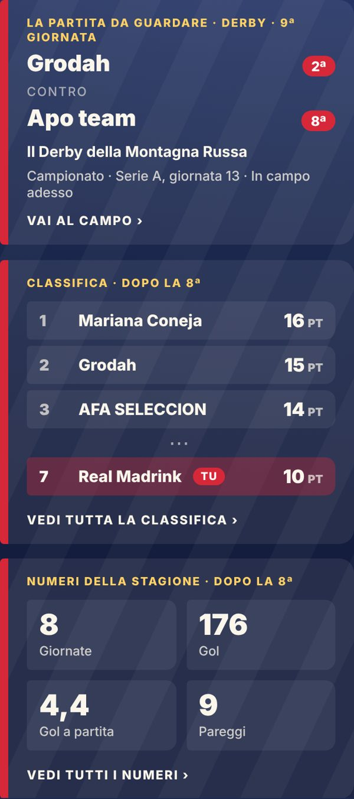
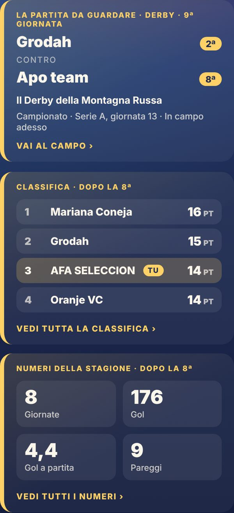

Home › Sotto «Oggi al Girrr»La partita da guardare

Dalla skin Notte Tropicale alla grafica normale. Prima un Derby, poi un sorpasso possibile, altrimenti la sfida più equilibrata. Il perché in una riga, l'ora d'inizio o «In campo adesso», e il tocco apre il Campo su quella partita.
Home › ClassificaLa classifica in breve

Sempre quattro righe. Dal podio alla quarta: le prime quattro con la tua in evidenza. Dalla quinta in giù: le prime tre, «⋯» e la tua riga con «Tu». Da ospite: le prime quattro. Stessi criteri della classifica del Tabellone.
Home › NumeriI numeri della stagione
Giornate, gol, gol a partita e pareggi del Campionato, con il collegamento a Tabellone › Numeri.